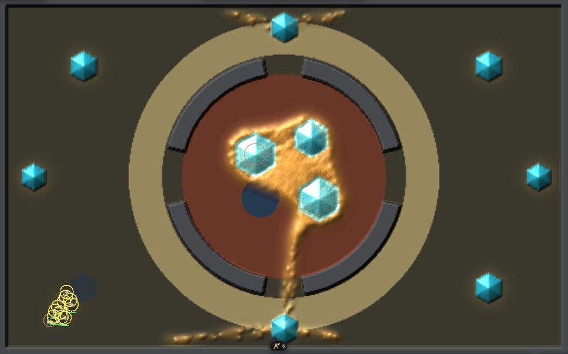
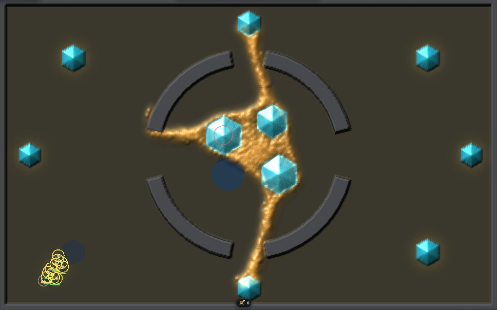
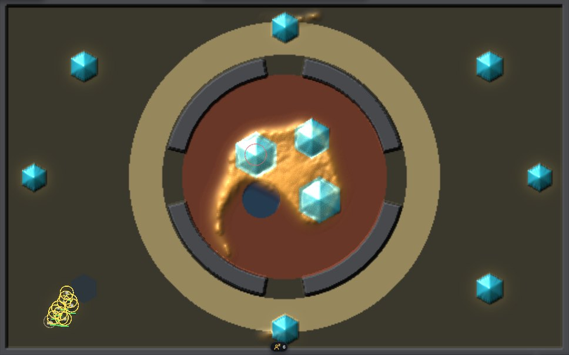
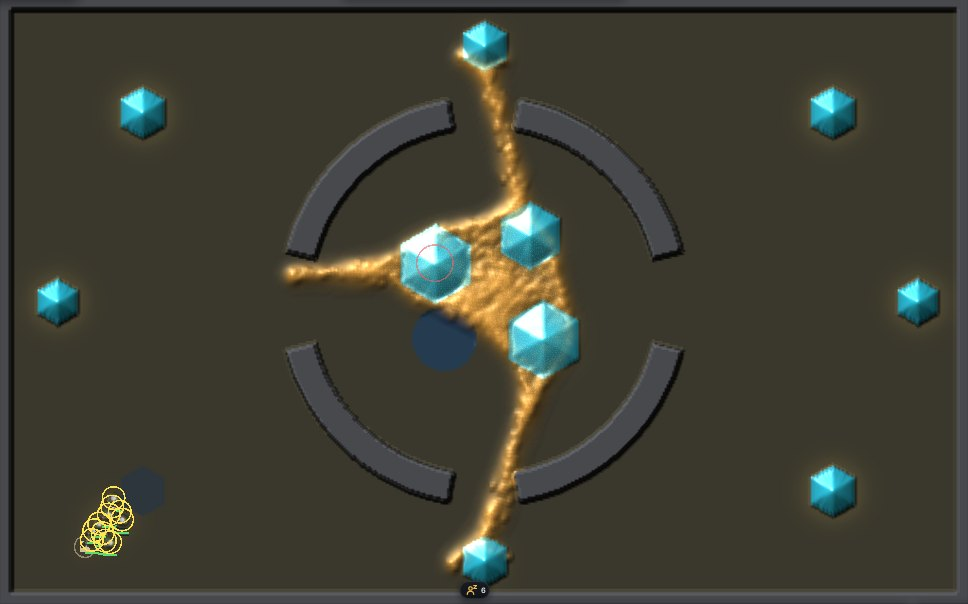
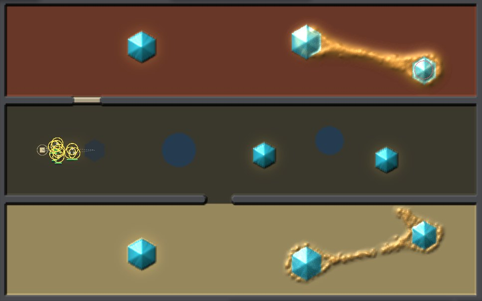
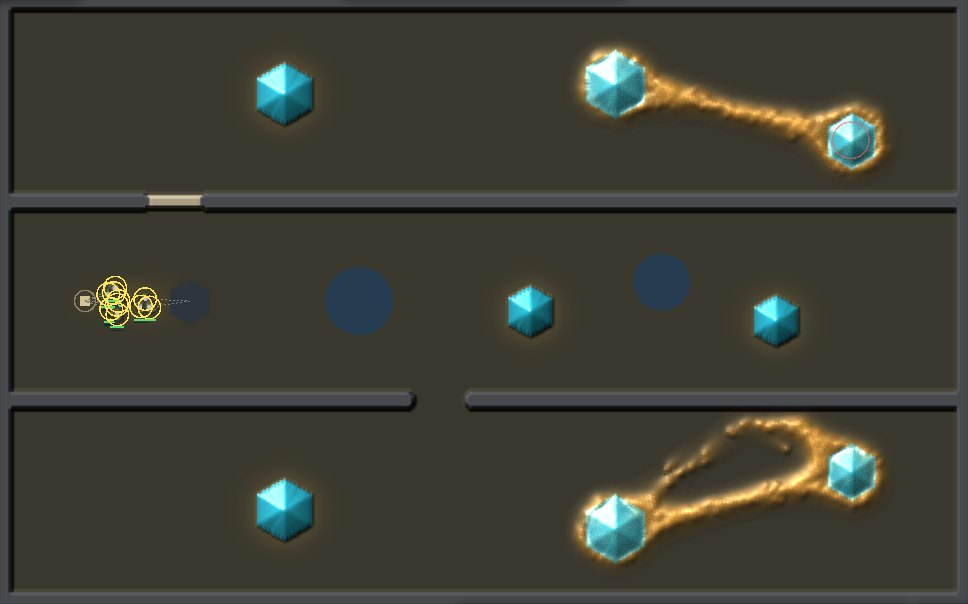
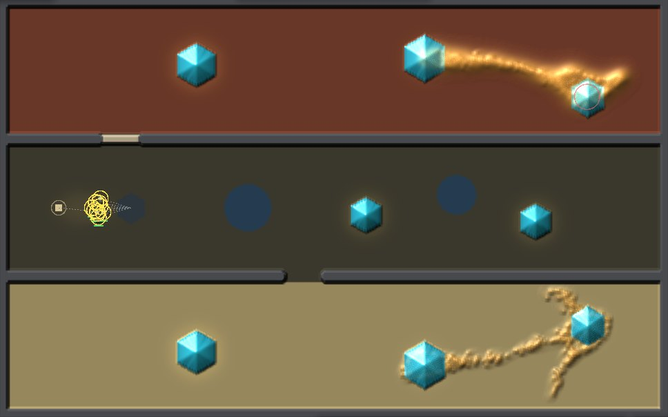
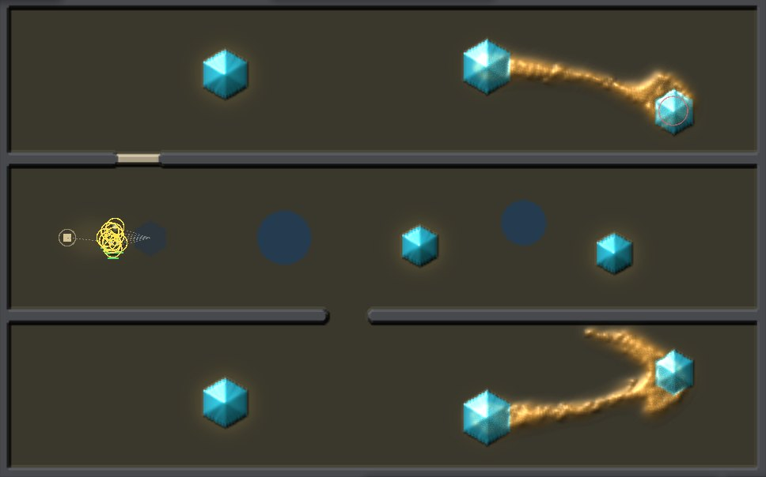

<title>Larder World Soil</title>
<meta name="claude:viewport-fit-sides" content="cover">
<link rel="preconnect" href="https://fonts.googleapis.com">
<link rel="stylesheet" href="https://fonts.googleapis.com/css2?family=Inter:wght@400;600&family=Space+Grotesk:wght@500;700&display=swap">
<style>
/* Layout: one reading column; each map is a pair of pictures (soil as drawn, soil cleared) of one moment of one game, its counts under each. Colours come from the world: mould amber, crystal cyan, sand tan, clay rust. */
:root {
  --bg: #f3f5f6; --fg: #182024; --muted: #56646b; --line: #d5dde0;
  --panel: #ffffff; --amber: #a86a12; --cyan: #127a93; --sand: #8a7240; --clay: #8e3f26; --plain: #3a372c; --win: #2f7d4a; --loss: #a8402c;
  --display: "Space Grotesk", "Segoe UI", system-ui, sans-serif;
  --body: "Inter", "Segoe UI", system-ui, sans-serif;
}
@media (prefers-color-scheme: dark) { :root:not([data-theme="light"]) {
  --bg: #0b1114; --fg: #e3eaec; --muted: #93a3aa; --line: #22303a;
  --panel: #111a1f; --amber: #e2a95a; --cyan: #8cebff; --sand: #d8c08a; --clay: #e08a6a; --win: #7fd19a; --loss: #f0937e; color-scheme: dark } }
:root[data-theme="dark"] {
  --bg: #0b1114; --fg: #e3eaec; --muted: #93a3aa; --line: #22303a;
  --panel: #111a1f; --amber: #e2a95a; --cyan: #8cebff; --sand: #d8c08a; --clay: #e08a6a; --win: #7fd19a; --loss: #f0937e; color-scheme: dark }
body { background: var(--bg); color: var(--fg); font-family: var(--body); line-height: 1.55;
  padding-left: max(16px, env(safe-area-inset-left, 0px)); padding-right: max(16px, env(safe-area-inset-right, 0px)); padding-block: 28px 48px; }
main { max-width: 1060px; margin: 0 auto; display: grid; gap: 40px; }
h1, h2 { font-family: var(--display); text-wrap: balance; margin: 0; }
h1 { font-size: 1.9rem; }
h2 { font-size: 1.3rem; }
p { margin: 0; max-width: 68ch; }
.lede { color: var(--muted); }
section { display: grid; gap: 14px; }
.pair { display: grid; grid-template-columns: 1fr 1fr; gap: 12px; }
figure { margin: 0; display: grid; gap: 6px; min-width: 0; }
figure img { width: 100%; border-radius: 4px; border: 1px solid var(--line); display: block; }
.counts { font-size: 0.9rem; color: var(--muted); font-variant-numeric: tabular-nums; }
.counts b { color: var(--fg); font-weight: 600; }
.tag { font-family: var(--display); font-size: 0.78rem; letter-spacing: 0.06em; text-transform: uppercase; color: var(--amber); }
.tag.off { color: var(--muted); }
.scroll { overflow-x: auto; }
table { border-collapse: collapse; font-variant-numeric: tabular-nums; font-size: 0.92rem; min-width: 560px; }
th, td { text-align: left; padding: 6px 14px 6px 0; border-bottom: 1px solid var(--line); }
th { font-weight: 600; color: var(--muted); font-size: 0.82rem; }
td.w { color: var(--win); font-weight: 600; }
td.l { color: var(--loss); font-weight: 600; }
.note { font-size: 0.9rem; color: var(--muted); border-left: 2px solid var(--line); padding-left: 12px; }
.key { display: flex; flex-wrap: wrap; gap: 6px 18px; font-size: 0.88rem; color: var(--muted); }
.key span::before { content: ""; display: inline-block; width: 10px; height: 10px; border-radius: 2px; margin-right: 6px; vertical-align: -1px; background: var(--sw); }
code { font-size: 0.88em; }
@media (max-width: 720px) { .pair { grid-template-columns: 1fr; } }
</style>
<main>
  <header style="display:grid;gap:10px">
    <h1>Larder World soil, now on the GPU</h1>
    <p class="lede">The maps' sand, clay and barren ground now act in the window as they do on the CPU, and the window draws them. Each step, trail on sand keeps 0.8 of itself, so tubes there come out thin and broken. Trail on clay keeps 1.05, so it spreads into broad sheets. Barren ground costs three times the upkeep and takes no births. Each pair below is one game: seed 1, the farm hand and the same map. The map's soil is as drawn on the left and cleared on the right. These are single games to look at, not a census.</p>
    <div class="key"><span style="--sw:var(--sand)">sand (trail x 0.8 a step)</span><span style="--sw:var(--clay)">clay (trail x 1.05)</span><span style="--sw:var(--plain)">plain</span><span style="--sw:var(--amber)">mould</span><span style="--sw:var(--cyan)">crystal</span></div>
  </header>

  <section>
    <h2>The Rim: the sand ring holds the mould in</h2>
    <p>With soil, the mould fills the clay core in one broad sheet and crosses the sand ring only as beaded strands at the gates. By 60 s it holds no tube to any outer crystal. With the soil cleared, the mould runs tubes straight across the ring to the top and bottom crystals by 30 s.</p>
    <div class="pair">
      <figure><span class="tag">soil as drawn, 60 s</span><div class="counts">mould <b>5,477</b> walkers · took <b>84%</b> · harvested 1,876</div></figure>
      <figure><span class="tag off">soil cleared, 60 s</span><div class="counts">mould <b>5,928</b> walkers · took <b>83%</b> · harvested 1,876</div></figure>
    </div>
    <div class="pair">
      <figure><span class="tag">soil as drawn, 30 s</span><div class="counts">mould <b>4,673</b> · took <b>92%</b> · harvested 1,875</div></figure>
      <figure><span class="tag off">soil cleared, 30 s</span><div class="counts">mould <b>4,862</b> · took <b>92%</b> · harvested 1,875</div></figure>
    </div>
  </section>

  <section>
    <h2>The Passes: clay holds a tube, sand breaks one</h2>
    <p>In the clay lane (top), the tube between the two crystals is smooth and wide. In the sand lane (bottom), the same tube breaks into beads with a gap in it. With the soil cleared, the sand lane's mould forms a loop of two tubes instead.</p>
    <div class="pair">
      <figure><span class="tag">soil as drawn, 60 s</span><div class="counts">mould <b>3,885</b> · took <b>88%</b> · harvested 1,508</div></figure>
      <figure><span class="tag off">soil cleared, 60 s</span><div class="counts">mould <b>3,963</b> · took <b>88%</b> · harvested 1,508</div></figure>
    </div>
    <div class="pair">
      <figure><span class="tag">soil as drawn, 30 s</span><div class="counts">mould <b>2,464</b> · took <b>96%</b> · harvested 1,507</div></figure>
      <figure><span class="tag off">soil cleared, 30 s</span><div class="counts">mould <b>2,289</b> · took <b>97%</b> · harvested 1,507</div></figure>
    </div>
  </section>

  <section>
    <h2>The GPU plays soil as the CPU does</h2>
    <p>One GPU tick from a warmed CPU dish matches one CPU tick. The test dish has sand, clay, barren and plain bands, crystals and growth, and is run with one species and with two. Before the tick, every walker is fed to breed, so children aim at barren cells as at the others. Three soil bugs planted one at a time in the shader each fail the test.</p>
    <div class="scroll"><table>
      <tr><th>One-tick twin</th><th>walkers off</th><th>trail L1</th><th>energy L1</th><th>born in the tick</th></tr>
      <tr><td>soil bands, growth on crystals</td><td>0 of 15,000</td><td>0</td><td>0</td><td>1,925</td></tr>
      <tr><td>soil bands, two species</td><td>0 of 15,000</td><td>0</td><td>0</td><td>2,076</td></tr>
      <tr><th>Planted bug</th><th colspan="3">what the twin saw</th><th>result</th></tr>
      <tr><td>sand keep never applied</td><td colspan="3">trail L1 1.5e-2 (bound 1e-4)</td><td class="l">fails</td></tr>
      <tr><td>barren upkeep x 1, not x 3</td><td colspan="3">energy L1 4.0e-3 (bound 1e-5)</td><td class="l">fails</td></tr>
      <tr><td>births allowed on barren ground</td><td colspan="3">528 walkers off, energy L1 0.13</td><td class="l">fails</td></tr>
    </table></div>
    <p>The game twin plays each map with its soil for 20 game seconds on both, with a soldier clearing the crystal nearest the landing. Both bank 300 food on every map. The moulds stay within 2.1% at every 5-second sample.</p>
    <div class="scroll"><table>
      <tr><th>Map (soil)</th><th>mould at 20 s, CPU</th><th>GPU</th><th>gap</th></tr>
      <tr><td>Fork (clay)</td><td>2,642</td><td>2,644</td><td>0.1%</td></tr>
      <tr><td>Nest (clay)</td><td>4,025</td><td>4,022</td><td>0.1%</td></tr>
      <tr><td>Passes (sand, clay)</td><td>3,174</td><td>3,162</td><td>0.4%</td></tr>
      <tr><td>Rim (sand, clay)</td><td>4,756</td><td>4,658</td><td>2.1%</td></tr>
    </table></div>
    <p class="note">Cost: on the cloud's software GPU, a game step takes the same time with soil as without (Rim 14.5 against 14.8 ms, Passes 14.8 against 14.9, three rounds each). That is within the noise between rounds, and it is not a GTX 1070 figure, which is still open. Soil is one word of the ground the passes already hold, read only when the world has soil. Drawing the soil adds nothing measurable to the window's ground rebuild (1.6-1.8 ms once a game second).</p>
  </section>

  <section>
    <h2>What changed</h2>
    <p>A cell's soil kind sits in bits 12-15 of the engine's ground word. That is where the map's G byte already puts it, as agreed with the graphics and maps threads. A world flag turns the soil rules on. One new row in the engine's parameters (832 to 848 bytes) carries the three rates, taken from the dish's own settings. The trail pass multiplies the trail, and each species' field, by the cell's keep. The life pass charges barren upkeep, and the breed pass skips barren cells. The window now passes the map's soil to the look. One fix rode along: the headless run's first "all" picture was zoomed past the world's edges, and it now fits.</p>
    <p class="note">Sources in the repo: <code>Reports/larder-world-roadmap-2026-11-11/soil/</code> holds the pictures, <code>runs.txt</code> (commands, counts, timing, the planted bugs) and <code>twin.txt</code> (the test output). The report section is <i>Soil on the GPU</i> in <code>larder-world-roadmap-2026-11-11.md</code>.</p>
  </section>
</main>
